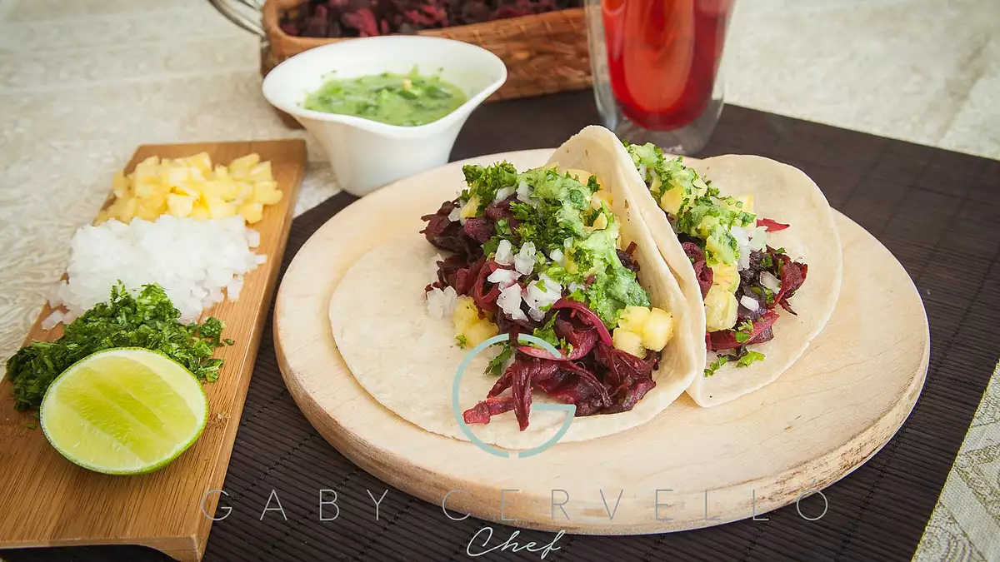

Tacos

These delicious Mexican vegan tacos (tacos de jamaica) are
made with hibiscus flowers and are garnished with pineapple,
onion, cilantro, and salsa verde with avocado.
-
8 ounces dried hibiscus flowers
- 1 tablespoon olive oil
- 1 onion, chopped
- 2 cloves garlic, minced
- salt and freshly ground black pepper to taste
Salsa Verde:
- 10 fresh tomatillos, husks removed
- 1 avocado - peeled, pitted, and diced
- ¼ onion, chopped
- 2 serrano peppers
- 1 clove garlic
- 2 tablespoons chopped fresh cilantro
- salt to taste
- 18 corn tortillas
Garnish:
- 2 slices fresh pineapple, chopped
- 1 small onion, finely chopped
- ½ bunch cilantro, chopped
- 2 limes, cut into wedges